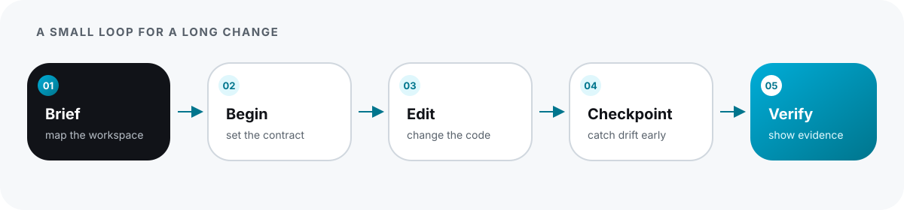

Source-grounded Go intelligence
for coding agents.
Coding agents lose repository context, drift from stated intent, and cannot prove what changed. agentic-go provides workspace context, durable change continuity, guarded refactoring, and evidence-backed verification—without embedding an LLM.
Install in seconds. Connect directly.
Supported on macOS (Darwin) and Linux for amd64 and arm64.
Requires Go 1.25, 1.26, or 1.27. Bundles the pinned agentic-go-gopls companion.
brew install agentic-mcps/tap/agentic-goagentic-go --versionOrient → Intent → Edit → Checkpoint → Verify
A small, predictable loop that gives external agents precise grounding before making changes, catches drift during modifications, and proves outcome through executed tests.

Anatomy of an Evidence-Backed Verification
Explore how agentic.verify/v1 assembles snapshot lineage, executed whole-package evidence,
calibrated findings, and explicit uncertainty without hand-waving.
Built specifically for Go coding agents
Every feature is deterministic, local, and tied to an immutable snapshot.
Workspace Context
Package APIs, diagnostics, definitions, references, implementations, related tests, and bounded call relationships without flooding LLM context windows.
Change Continuity
Private same-machine Change Contracts tracking goals, touched files, questions, decisions, and catching exported API or dependency drift.
Guarded Refactoring
Deterministic AST rename, format, and import organization. Content-addressed preview plans re-verify all file preimages before modifying contained non-generated files.
Evidence-Backed Verification
Whole-package test execution, race detection, coverage tracking, calibrated concurrency and error analyzers, and explicit uncertainty reporting.
Strict workspace containment. No sandboxing illusions.
Understand exactly what agentic-go executes, what it modifies, and where security boundaries lie.

Read & Audit Tools
Completely read-only and closed-world. Never run compilers or test binaries. Safe for automated execution.
Execution Tools
May compile and run trusted repository code with the caller's privileges. We describe this as containment, never as sandboxing.
Git Safety
agentic-go never stages, commits, rebases, or alters Git history. Refactoring modifies only existing non-generated files after journal validation.
Corpus-calibrated and release-proven
All claims are backed by public test golden fixtures, multi-version toolchain matrices, and historical corpus reviews.
| Evaluation Gate | Toolchain & Environment | Observed Outcome |
|---|---|---|
| Multi-version Test Matrix | Go 1.25.13, Go 1.26.7, Go 1.27.0 (macOS & Linux) | ✓ Pass (100% test suite passing across all versions) |
| Concurrency & Race Detection | Go 1.27.0 with -race enabled |
✓ Pass (0 data races detected) |
| Analyzer Calibration Corpus | 10 pinned repositories, 467 reviewed findings | 0% False Positives observed in corpus baseline |
| Release Archives | Darwin & Linux (amd64 / arm64) | ✓ Byte-identical deterministic builds with checksums |
| Gopls Companion Seam | Pinned gopls v0.21.0 sidecar | ✓ Pass (Strict capability handshake & telemetry disabled) |